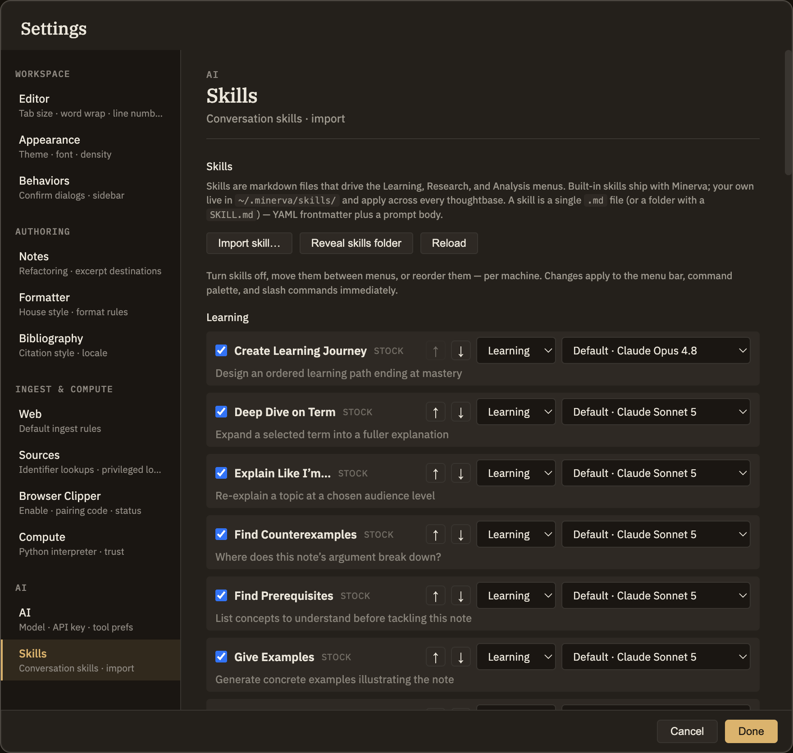

Docs/Thinking tools/Managing & authoring
Managing & authoring
Skills are the ready-made thinking tools in the Learning, Research, and Analysis menus. From Settings → Skills you can turn any of them off, move it to a different menu, or change its order. Your changes take effect right away.
Managing skills from Settings
Open Settings → Skills and you'll see each menu — Learning, Research, and Analysis — listing its skills as rows. Every row has a simple set of controls, so tidying up your menus is a matter of clicking, not editing anything by hand.
Turn on or off
Uncheck a skill to hide it everywhere it would otherwise appear. It isn't deleted — the row stays in Settings, dimmed, so you can switch it back on whenever you like.
Move to a different menu
Use the menu dropdown to send a skill to whichever of the three menus you prefer. Handy when a tool you reach for constantly lives in one menu but you'd rather find it in another.
Reorder
The up and down arrows change where a skill sits in its menu. The order you set here is the order you'll see everywhere the skill appears.

Writing your own
Beyond rearranging the skills that come built in, you can write your own to capture a way of thinking you return to often. Authoring is a more advanced topic with its own dedicated guide — start there when you're ready.